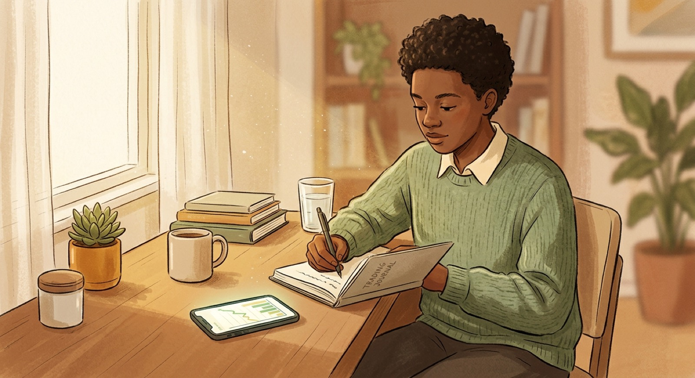
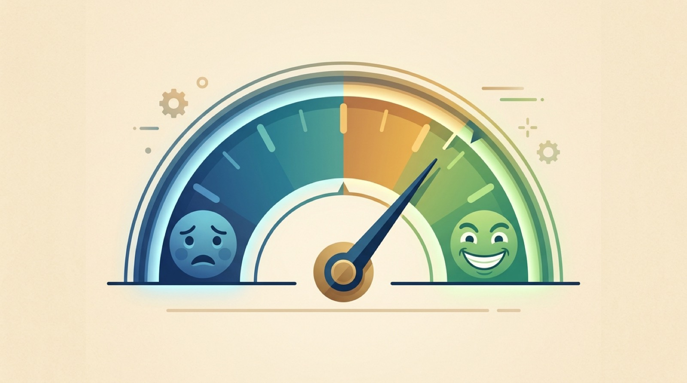
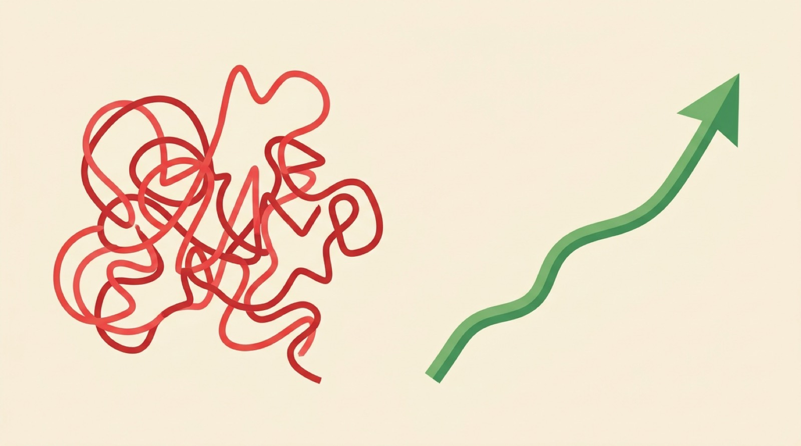
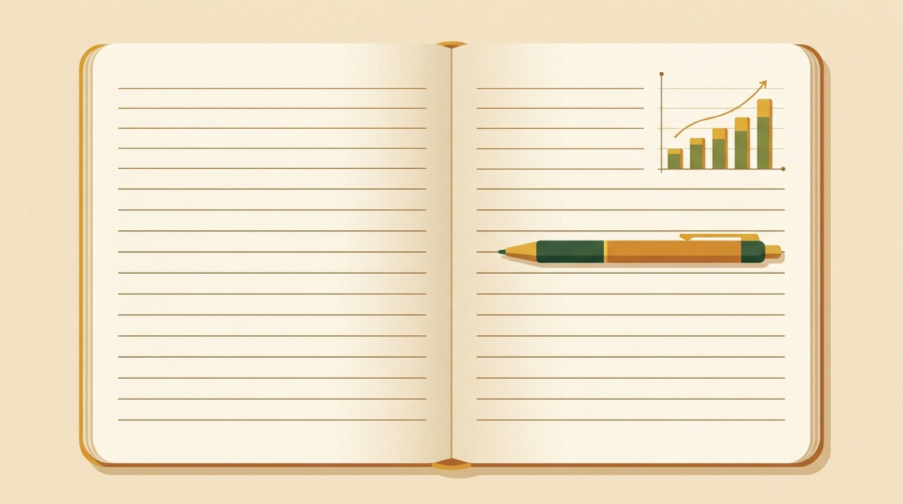

The hardest part of investing is not the charts. It is the person holding the phone. Beat fear and greed with two unstoppable tools: a plan, and a journal.


Two emotions wreck more traders than any bad chart ever will.
Everyone is hyped, so you jump in at the top, scared of missing out.
It dips, everyone panics, so you dump it at the bottom.
Watch the two lines. The red one is the emotional trader, whipsawed by fear and greed. The green one is you, with entry, exit, and stop decided in advance.

Every trade gets logged. Over time your journal shows you the truth about your own habits.

Log five things every time: why in, the plan, the exit, the stop, and what happened.
Slide from extreme fear to extreme greed. See what the emotional move would be, and what the disciplined, plan-following move is instead.
Tap a card, then drop it in the right column. One column is calm and disciplined. The other is fear and greed talking.
Five questions. Show me you can keep your cool and trust the plan.
Fear and greed push you to buy high and sell low.
A written plan decides entry, exit, and stop in advance.
Your journal is a free coach. Log every trade and review it.
Small losses are wins. They protect you for the next shot.